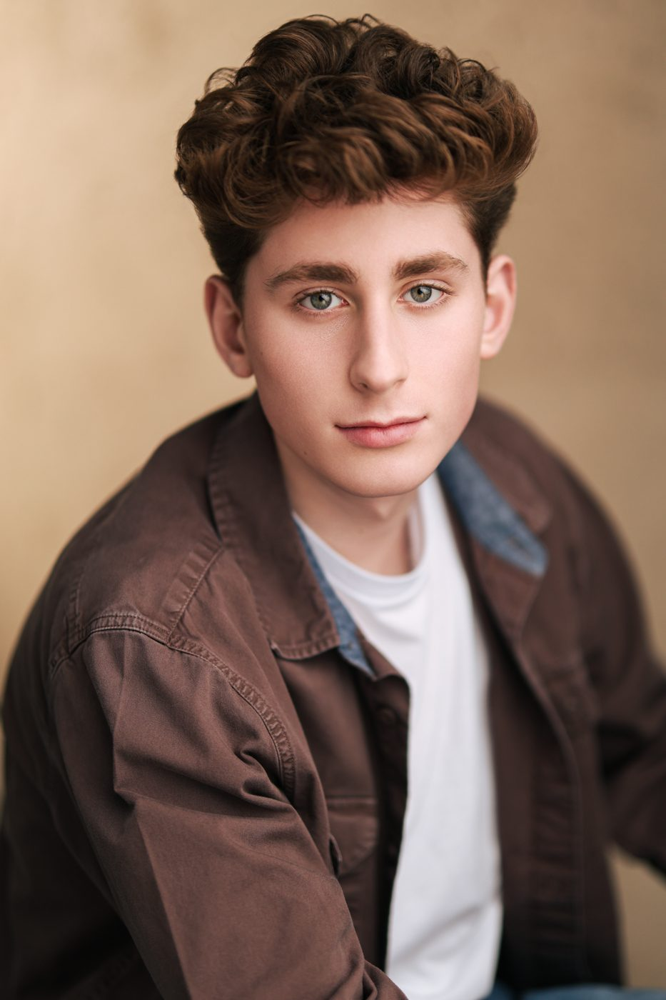

[City], [Province]Represented by [Agency]
Gallery
Headshots
Updated [Month Year]
Current headshots for casting. High-resolution files are available through [Agency].



More looks
Portraits and details
Casting directors
Request high-resolution headshots or a printed resume through [Agency].